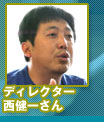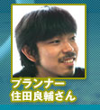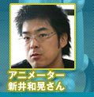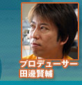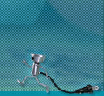
| 『ちびロボ！』に長く関わってきた精鋭揃いのオフィスは、東京・恵比寿にある有限会社スキップ。アットホームで楽しそうな開発現場に突入、開発秘話を伺ってきました。ちびロボTシャツで記念撮影をしてもらったスタッフの皆さん、発売に至ってひと安心のご様子。この世にカワイイ『ちびロボ！』が生まれるまでを、とくとご覧下さいませ。 |
--まず、スキップさんのことを教えて下さい。
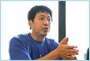西： 僕は元々別会社で働いていた時に王道RPGなどを制作していたんですが、王道以外のものを作りたいなということで出来た、ラブデリックという会社があるんですね。そこから更に分裂して出来たのが、スキップです。スキップになってからは『ギフトピア(ゲームキューブソフト)』を制作していて、『ちびロボ！』は第二弾になります。
田邊： 実は、『ちびロボ！』はSKIPさんの別チームがバンダイさんのプロジェクトとして開発されていたんです。そのころ西さんは他のプロジェクトをされていたのですが、私から宮本(任天堂 情報開発本部長)に『ちびロボ！』の開発について相談したところ「キャラも良い感じだし、西さんならいい作品にしてくれるのでは？」の一言で動き出したのが２００３年だったんです。
西： 大元のスタートから現在までは４年かかっていて、プロジェクトには新井と住田が最初から関わっていたので、彼らは相当長いつき合いですね。
--足かけ４年ということですが、制作はかなり大変だったんでしょうか。
西： ちびロボのキャラクター以外は殆ど一から作り直しました。ちびロボも、実は結構作り直しをしています。
新井： ４年かけた分、面白くなっていると思います。移動方法なんかも、ポインティングシステム(移動先を指定すると、そこへ向かってキャラが動いていく)だったのを変えたりと、とにかく殆ど作り直しでした。
--どういう感じで制作が進んで行ったんですか？
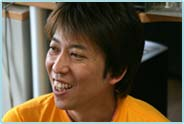田邊： 西さんて、まずは設定ありきの方なんですよ。メッセージ性や世界観にフォーカスして、そこからこだわりを持って作っていかれる。でも任天堂は、インタラクティブな感覚を一番大事にしているので、この辺りのこだわりの優先順位には大きな差がありました。
西： だから、最初は拒絶反応がありましたよ。ギフトピアを持ちこんだ時、田邊さんや宮本さんからしたら「腕前拝見」だったんでしょうね。そして今回、「"歩いて話す"ばかりの繰り返しのゲームじゃないものを作ってみませんか」と田邊さんに言われたんです。テキストや説明文なんかをあまり読まない人でも遊べるように試行錯誤してくれと。自分らのスタイルは尊重して頂きましたが、「それ以外の部分を入れるように」とよく言われました。トライ＆エラーって感じで、『ギフトピア』の時はいい意味で自由にさせてもらったのですが、今回は本当にコラボレーションさせて頂いたと思います。
田邊： 例えば、歩く・走るなどのモーションに対しても、西さんは個性的な動きを追求されるんですね。サザエさんのエンディングの走り方にしてくれとか・・・。でも任天堂はいわゆるスタンダードな方が良いと考えました。ですから、実際のモーションを作られた新井さんは、間に入って大変だったと思います。
新井： ２人の折り合いは自分がつけないといけなかったんで…。
西： 任天堂さんはとにかく"手触り"なんですよ。操作してどう楽しいかを追求していく。「手触りの任天堂」ですね。そんななかで、「ちびロボのことは新井に任せればいい」と田邊さんが言って下さるほど、彼は「ちびロボらしい動き」を作って頑張ってくれましたと思います。最後の方になると、動き方を考えなくても出来ていましたよ。 |
--今回の制作にあたって、頭にあったことはどういったことですか？
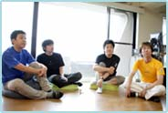
西： まず、素材をどう料理するかということですね。スタンダードにと言っても、可愛くなりすぎず抑えめにすること。悪いヤツを倒すわけでもないし、ヒーローでもありません。10センチの日常生活の中でちびロボと触れ合って、どう役立つか、人を喜ばせてハッピーを貯めることで、自分もハッピーになることをどう表現するかですね。ただ可愛らしいだけではない部分も入れたくて最後の方までモメたんですが、ちびロボは電力で動くので、動けば動くほど家庭の電力を消耗するんです。「動けば動くほど嫌がられる」というジレンマを抱えていて、ここは真実味を入れるために譲れない部分でした。
--確かに家庭にいればそうなんでしょうけど、ちょっと切ないですね。
田邊： こういうメッセージ性の部分が西さんの味なので、ここは大切にさしてもらいました。最初は、ちびロボがコンセントで充電するとマネが減っていくようにしていたんですが、それでは西さんの言うジレンマが表現できないということで止めました。
西： コンセプトを話し合っても、田邊さんは「手触り」という部分で色々と遊ばせたいわけです。なので『ちびドア』を沢山つけてくれと言われたんですが、僕は「誰がつけたのか？」にこだわる。田邊さんは「いいからとにかくつけて」というように食い違ったりですね(笑)。あと英語表記をするにあたって、『CHIBIROBO』という大文字では"ちび"なのにおかしいから、全部小文字表記にしようとか、とにかく冷めないようキッチリしたかったというのがありまして。
--西さんはそういう部分で徹底されているんですね。
西： でも、作家性だけの作品ではなく、少しずつみんなの色が出ていると思いますよ。モーションも、もっと変というかキャッチーな動きにしたかったんですが、田邊さんが「あかん！」の一言を(笑)。やはりスタンダードではないから、という理由なんですね。
田邊： 話は変わりますが、このゲームのボリュームはとても１０数名でやったとは信じられないくらいあるんです。その分、スタッフの皆さんの働き方は尋常なものじゃなかったですよ。
住田： 最後の方は、もうマゾ的に作るしかなくて…(笑)。でも、嫌なことはしていませんでした。作りたい物を作るという意識でやれていたので良かったですね。
西： 彼は精神的な切り替えのためにインドへ２ヶ月くらい行ってたんですが、そのせいか怪しげなキャラが増えましたね(笑)。
田邊： その住田さんに最初にお願いしたのが、タライネタでした。まだ、ゲームの骨格も決まって無いころに「コンセントで充電した時に、ちびロボの頭にタライを落としてっ！」って・・・。住田さんも私も大阪人なんで、ベタなネタがやりたいねえって。で、それが出来て見せてもらって「ああ、このゲームはおもろなる！」と確信しました。（笑）
新井： いきなりタライを落とせって言われても(笑)。
--個性的なキャラクターが出てきますが、田邊さんはどういう部分で思い入れがありますか？
田邊： 私は、ヒーロー物が大好きでして、それも典型的なパターンが好きなんでお願いしたら"ギッチョマン"を作っていただけました。ガッチャマンへのオマージュですね。他にも"ナスビ仮面"というのが出てくるんですが、それは『レッキングクルー』(ファミコンソフト)から引っ張っています。あとバンダイさんのキャラクターでは"プリモプエル"が出ていますよ。任天堂とバンダイさんとのコラボということでの競演です
西： プリモプエルはかなり可愛く出来ているので、プリモファンの人には是非見て頂きたいですね。
田邊： そうそう、あと実はマイク入力にもちょっとだけ対応していまして、ゲームキューブ版『マリオパーティ６』のマイクをつなげて「ちびロボ〜！」と呼んであげて下さい。どんな風になるかはお楽しみということで。
--ギッチョマンの着ぐるみとかもありますよね。
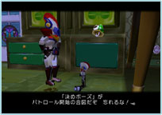西： あれは一回寝て起きると脱いでるんですが、あまり気付きませんよね。起きても着ているという設定にしたかったんですが、「起きたらリセット」という感覚で、脱いでることを忘れてるんじゃないかと。プレーンな状態を見せるためにいちいちリセットかけてるんですよ。一度着てしまうと、なかなか脱ぎ着しないですし。イチオシの着ぐるみは『犬タオ』の着ぐるみです。イベントで入手可能になるので、ぜひ見つけて下さい。
住田： 僕は"コンセントマン"ですね。どこかにいるので探して下さい。
西： 今回はアイテム、着ぐるみ、キャラクターを総合すると、すごいボリュームですよ。 |
--ストーリーに関してはいかがですか？
田邊： まず一本道はやめよう、ということでした。フィールドがあって、そのなかでやりたいことが出来る。中盤からはプレイヤーがストーリーに入っていくという流れにしましたが、イベントも並列にあって、基本的にはどれから始めても良いし、やらなくて良い。ですから、ストーリーを強制することはありません。
西： 『ギフトピア』が一本道だったのもあって、それは「あかん」と言われました。いつでもなんでも出来るという自由度の高さを要求されまして。「こっちに行かねば」はダメでというのを、とにかく叩き込まれた感じですね。エンディングもそこで終わるのではなく、また遊びたい人のために…という要素を入れようと。
住田： 先を急かされて遊ぶものじゃなく、自分から動くという意味では、新しくもあり古くもあり…ですね。
--新井さんはどういった部分に気を遣われましたか。
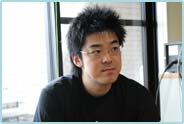
新井： ちびロボのキャラを担当していたので、遊んでくれる人がストレスなくできるようにという部分です。自由度が高い分だけ、動きにストレスがあったら遊ばなくなるんじゃないかと思いまして。ブラシをこするといった動きも、かなりフレーム数を削ったんですよね。本当はキッチリ作りたかったんですけど、そこでもたもたしているのは良くないということで。
西： ゴミ捨てのフレームも削られていますよ。動きの削り方に関しては、かなりそのバランスを探って行きながら作っていました。
新井： あっさりしすぎず、こってりしすぎないように、操作感を損なわないようにと。キャラクターが小さくて可愛いので、幼くなりすぎないように気をつけましたし、ちびロボがロボっぽくなりすぎず、そして人間っぽくなりすぎないようにというのも考えていました。
西： なかなか制作が上手くいかなくて、新井が「もうロボットなんか、見たくもねぇ！」とこぼしたりもしていましたけど(笑)。
新井： でも、他の物も作りながらでも４年間も関わっていて、やはり最後まで見届けなくてはという責任感で動いていました(笑)。
--世に出て、本当に良かったですね。さて、ちびロボってどういう存在なんでしょう？
新井： ホントは全部わかってるけど、わからないフリをしているんだと思います。適度にプレイヤーと距離感があって、いいキャラになってるんじゃないでしょうか。プラグがついてて可愛いということはつまり、自分じゃないわけですよね。RPG用のキャラクターとはかけ離れた存在だと思います。
住田： 作品全体としては、家族の日常的なふれ合いがおもしろおかしく描かれています。リアルすぎるとつまらないでしょうし、面白い所を集めて作っている感じですね。
--これは個人的な質問なんですが、キャラクター達は何語を喋ってるんですか？
西： あれは設定の上で『ハナモゲラ語』と呼んでまして。フランス語、ロシア語などを混ぜて作っています。「○○っぽい」という感じをギリギリで狙った言語です。舞台は一応、'60年代アメリカ風ではあるんですがね。日本家屋ではなく、世界中の人がプレイした時に違和感の無い世界観にしたんです。
--あのご一家のお嬢様は、なんでカエル語しか話さないんでしょう？
西： これは裏設定なんですが、テレビ番組を観ていたジェニーが、ママに怒られちゃったんですよ。その時の番組が魔女に魔法をかけられてカエルに変身するというような内容で、ママへの仕返し的なつもりでカエル語しか話さなくなったんです。これも、アイテムを集めていくとちゃんと喋ってくれるようになったりします。
--では、ユーザーの皆さんにメッセージをお願いします。
田邊： スキップさんとできたことで、任天堂にはない香りが出ていると思います。西さんのカラーのなかに、任天堂テイストが入ったかなと。これは本当にいいコラボレーションになりました。
西： 買って下さい！ と言いたいです(笑)。ゲームキューブはいいハードで、まだまだ行けると思ってます。据え置きならではの魅力がたっぷり詰まっていますので、ぜひ遊んで下さいね。
--どうもありがとうございました！ |
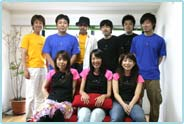

|
 |
|
|